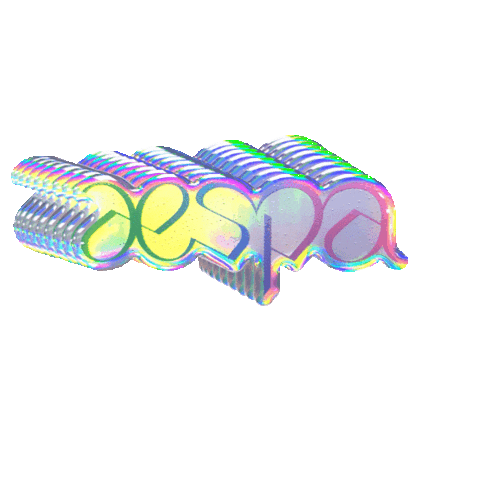
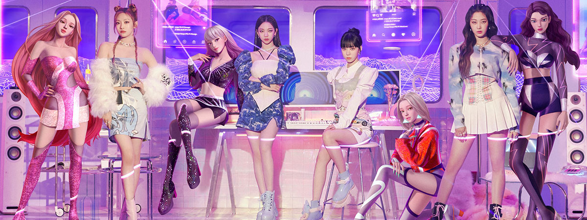
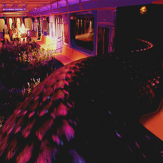

Antes de tudo, é preciso ter em mente que o conceito do aespa aborda a conexão entre realidades. Nesse sentido, cada uma das quatro integrantes (Karina, Ningning, Giselle e Winter) possui uma ae: as alter egos virtuais que funcionam como bancos de dados de um ser humano. Dessa forma, sempre que o aespa conecta-se às ae, o objetivo principal das personagens (no universo fictício) é chegar ao Kosmo: o destino final dos heróis de Kwangya.
Naevis (ou então NAVIS, ou estilizado como nævis) é uma personagem já recorrente no mundo do aespa. A inteligência virtual do mundo æ.

De forma mais simples e menos complexa (e também menos apocalíptica), Naevis poderia ser a Morpheus de Kwangya, que entrega as pílulas do virtual e da realidade para o aespa e as ae, e faz a SYNK entre os universos. E a Black Mamba (serpente) poderia ser, de certa forma, o agente Smith de todo o conceito.